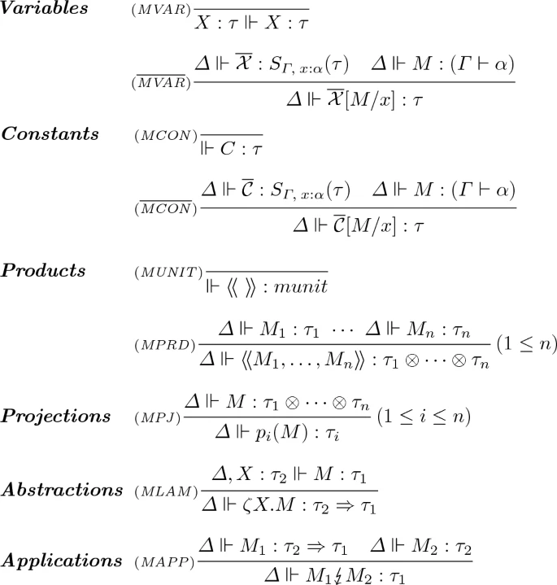
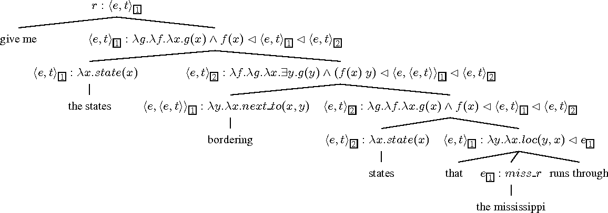
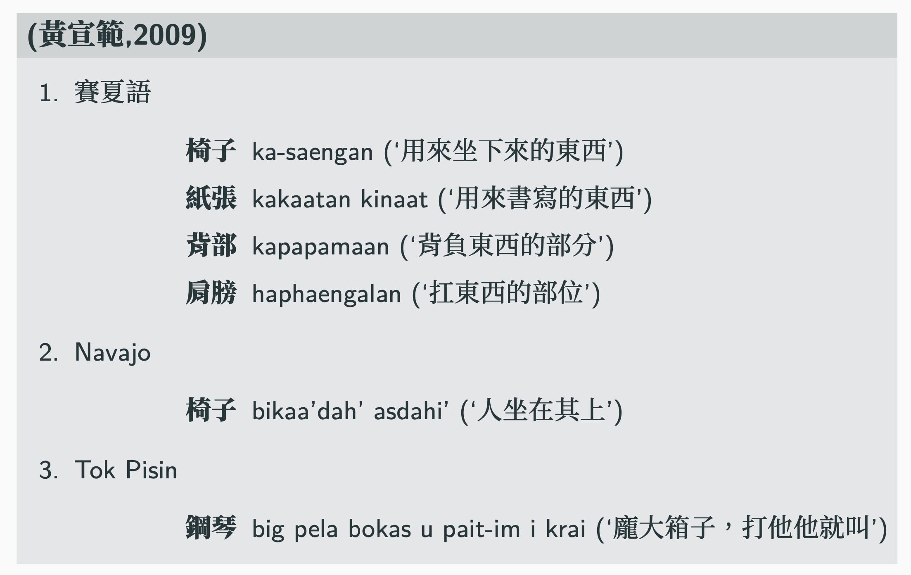
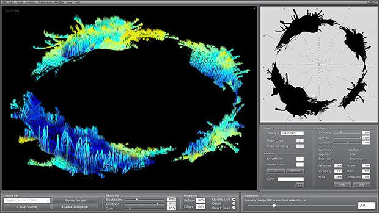
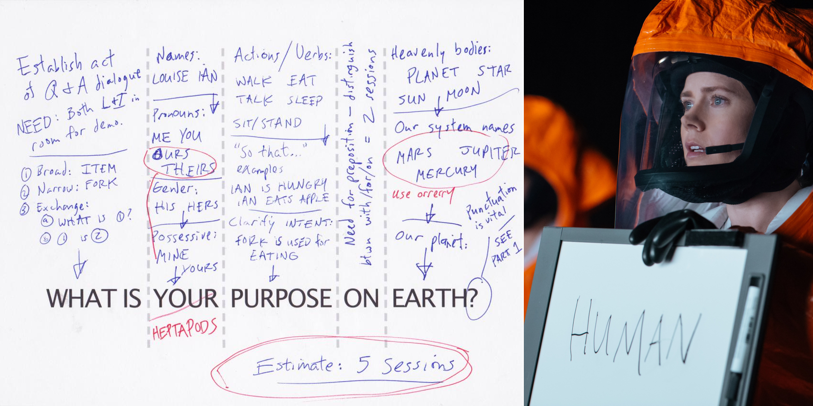
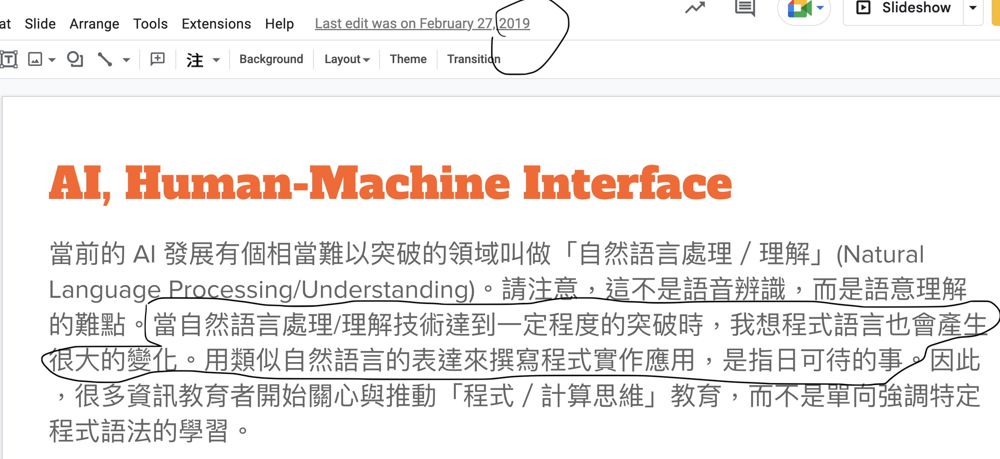

Week1 Orientation
歡迎加入語言解謎的世界
我是

語言的邏輯分析
語言是什麼？
邏輯？
分析？
[語言的邏輯]分析？ [語言]的[邏輯分析]？
Languages and Linguistics
To uncover and describe what you know, and how you learned
Form (sound and script) and Meaning
- Phonetics/Phonology; Morphology/Syntax; Semantics/Pragmatics
- Psycho-neuro-social-historical-cultural dimensions
- various applications : language pedagogy, natural language processing/understanding, language, speech therapy (language-speech-pathology)
Linguistics and Language Science(s)
Language Modalities
- Every language must have a mode of communication / modality
- Auditory-vocal
- visual-gestural
- Importance of studying different modalities > toward Language Science(s)
World Languages
我們會的語言，只是七千多種的幾個。(對臺灣最具意義的南島語族約 1200+ 種，不斷流失中）
What do you know when you (say) you know a language? (BTW, Language is not Writing System) 5000-7000/1000－2000）
All Languages matter!
自然語言、動物語言、星際語言、人造語言、電腦語言、以及其他書寫文字溝通系統
【人造語言/constructed languages】
【外星語言學 Xenolinguistics】
【Linguistic Steganography 語言隱寫術】／ 【Algorithmic Deciperment (Voynich; Rovash), etc】
- non-verbal, non-symbolic communication system, ever possible? (electrocardiogram etc )
邏輯
語言與邏輯是彼此密切相關的，語言就是由一系列符號（詞語、標記、符號）和它們之間的規則組成的系統，可以用來表達思想或溝通。邏輯是一門對推理進行分析和評估的科學，它提供了一個框架，用來檢查推理的合理性，以及推理中涉及的假設的清楚性和有效性。因此，語言的邏輯分析就是對語言的結構和語言中推理的合理性進行分析和評估的過程。它是利用邏輯的原則對語言表達的概念及其關系進行分析的過程，以探索語言的正確性和有效性，并確定語言表達中的推理是否符合邏輯規則。
(這段是 AI 生成的)
邏輯有很多意義
- 邏輯是一個涵義很廣的概念，涵蓋的並不局限于形式邏輯或數理邏輯所表達的範圍 （參見康德【純理性批判】Critique of Pure Reason）
這門課不這樣談語言 (可惜？慶幸？ 😄)
 
語言文化與邏輯
巴拉圭的 Toba 語言中的數字表達，你看出規則了嗎？
| 阿拉伯數字 | 表達 |
|---|---|
| 1 | nathedac |
| 2 | cacayni 或 nivoca |
| 3 | cacaynilia |
| 4 | nalotapegat |
| 5 | nivoca cacaynilia |
| 6 | cacayni cacaynilia |
| 7 | nathedac cacayni cacaynilia |
| 8 | nivoca nalotapegat |
| 9 | nivoca nalotapegat nathedac |
| 10 | cacayni nivoca nalotapegat |
僅使用 1-4 的數字，其餘數字則需要大量重複使用這四個數字
| 阿拉伯數字 | 表達 |
|---|---|
| 1 | nathedac |
| 2 | cacayni 或 nivoca |
| 3 | cacaynilia |
| 4 | nalotapegat |
| 5 = 2+3 | nivoca cacaynilia |
| 6 = 2*3 | cacayni cacaynilia |
| 7 = 1+2*3 | nathedac cacayni cacaynilia |
| 8 = 2*4 | nivoca nalotapegat |
| 9 = 2*4 + 1 | nivoca nalotapegat nathedac |
| 10 = 2 + 2*4 | cacayni nivoca nalotapegat |
原初邏輯與文化
對抽象沒有興趣；矛盾也沒有關係。
- `Tasmanians` 沒有「樹」這個詞，但對於每一種灌木、橡膠樹都有專門的語詞；沒有抽象的方式表達硬的、軟的、圓的。會說「像石頭一樣」(硬)，「像大腿一樣」(長)，「像月亮一樣」(圓)。不去描寫感知者的主題所獲得之印象，而去描寫客體在生活空間中的 形狀、輪廓、位置、運動、作用方式等等。
Affordance
從生態心理學來的這個概念也很有幫助理解語言的邏輯分析。
任何對環境或物體的知覺，都提供了知覺者某種行動的可能。如: 可以用來支撐的地面、可以食用的物質等。
語言通常也透過物體的名稱來反映了這種 affordance 的關係。
Affordance in Language

小總結
語言：世界語言與人造語言，只要是人類用來溝通的符碼系統，形意結合的符號系統，都是語言。
邏輯分析：不帶文化偏見的規則與模型探究與推導。
那，學習語言的邏輯分析能幹什麼？
好玩！
[Recreational linguistics](https://www.wikiwand.com/en/Logology_(linguistics)
a discipline which stimulates language learning through word games and lexical combinations. The method includes acrostics, mesostichs, tongue twisters, crossword puzzles, word searches, riddles, which Mollica advocates to teach language (vocabulary and grammar) as well as culture.
好用！
Linguistics in the real World
- Linguistics in Everyday Life
- Linguistics in the real world: Multi-modal and Multi-channel communication Revisiting Semiotics
Linguistics in the irreal World
Heptapods in Arrival 

post-AI skills
unplugged computational-linguistic thinking
大型語言模型下的時代意義
(Language) Game with a purpose
in-context learning and prompt engineering
謝老師神預言 😄

Linguistic Analytics
Linguistic Education, Flipped
任何與語言有關的問題，都是語言分析的範疇。Linguistic analysis as an essential Problem Solving Skill ( used to be a mental process in psychology and a computerized process in computer science)
Core competence to reasoning with small and unseen data
- 大數據與統計計算不是人類的強項
- 基於小/厚數據的知識推理、直觀、解決問題、與文化想像的能力、多元價值與同理溝通
Linguistics Olympiad
最有關聯的教育活動
我們怎麼實作這門課？
Linguistic problem solving with small data
用少量的知識當基礎
用自然語言與人造語言的例子來練習
解碼、辨識與推導 (Decoding, Recognition and Inference) 到編碼 (Encoding)
提醒
- 記得帶筆記本、筆電之類。